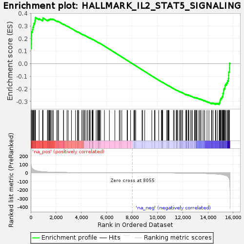
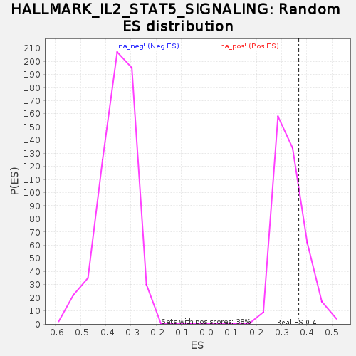

| | | Dataset | DiseaseStatus_ctr_vs_case |
| Phenotype | NoPhenotypeAvailable |
| Upregulated in class | na_pos |
| GeneSet | HALLMARK_IL2_STAT5_SIGNALING |
| Enrichment Score (ES) | 0.36669278 |
| Normalized Enrichment Score (NES) | 1.0961049 |
| Nominal p-value | 0.24739583 |
| FDR q-value | 0.4996151 |
| FWER p-Value | 0.996 |
Table: GSEA Results Summary

Fig 1: Enrichment plot: HALLMARK_IL2_STAT5_SIGNALING
Profile of the Running ES Score & Positions of GeneSet Members on the Rank Ordered List
| SYMBOL | RANK IN GENE LIST | RANK METRIC SCORE | RUNNING ES | CORE ENRICHMENT | | 1 | CXCL10 | 0 | 254.423 | 0.1213 | Yes |
| 2 | GBP4 | 38 | 76.717 | 0.1555 | Yes |
| 3 | PIM1 | 47 | 74.064 | 0.1903 | Yes |
| 4 | PLEC | 56 | 69.836 | 0.2230 | Yes |
| 5 | MYC | 65 | 65.969 | 0.2540 | Yes |
| 6 | SCN9A | 135 | 47.797 | 0.2723 | Yes |
| 7 | AHNAK | 174 | 41.493 | 0.2897 | Yes |
| 8 | TNFRSF8 | 225 | 36.858 | 0.3040 | Yes |
| 9 | ENPP1 | 246 | 35.162 | 0.3195 | Yes |
| 10 | GABARAPL1 | 315 | 30.727 | 0.3298 | Yes |
| 11 | DENND5A | 333 | 29.569 | 0.3428 | Yes |
| 12 | NOP2 | 361 | 28.023 | 0.3544 | Yes |
| 13 | EMP1 | 374 | 27.390 | 0.3667 | Yes |
| 14 | FAH | 661 | 18.175 | 0.3570 | No |
| 15 | HUWE1 | 936 | 13.550 | 0.3459 | No |
| 16 | CASP3 | 941 | 13.509 | 0.3521 | No |
| 17 | UMPS | 961 | 13.365 | 0.3572 | No |
| 18 | SYT11 | 966 | 13.283 | 0.3633 | No |
| 19 | FURIN | 1314 | 9.838 | 0.3457 | No |
| 20 | FGL2 | 1374 | 9.450 | 0.3465 | No |
| 21 | PTRH2 | 1385 | 9.370 | 0.3503 | No |
| 22 | SPP1 | 1465 | 8.851 | 0.3494 | No |
| 23 | GSTO1 | 1487 | 8.755 | 0.3523 | No |
| 24 | IRF8 | 1526 | 8.538 | 0.3539 | No |
| 25 | IL18R1 | 1572 | 8.317 | 0.3550 | No |
| 26 | ECM1 | 1667 | 7.895 | 0.3527 | No |
| 27 | SELL | 1695 | 7.756 | 0.3547 | No |
| 28 | PUS1 | 1791 | 7.318 | 0.3521 | No |
| 29 | ODC1 | 2049 | 6.356 | 0.3386 | No |
| 30 | IKZF2 | 2136 | 6.050 | 0.3360 | No |
| 31 | LTB | 2200 | 5.828 | 0.3347 | No |
| 32 | ABCB1 | 2591 | 4.836 | 0.3120 | No |
| 33 | LRIG1 | 2592 | 4.835 | 0.3143 | No |
| 34 | CD86 | 2864 | 4.187 | 0.2989 | No |
| 35 | RNH1 | 2959 | 4.008 | 0.2948 | No |
| 36 | BCL2L1 | 3216 | 3.507 | 0.2801 | No |
| 37 | GPR83 | 3536 | 2.997 | 0.2610 | No |
| 38 | NDRG1 | 3684 | 2.795 | 0.2529 | No |
| 39 | TNFRSF1B | 3740 | 2.723 | 0.2507 | No |
| 40 | NCOA3 | 3795 | 2.641 | 0.2485 | No |
| 41 | METTL20 | 4022 | 2.359 | 0.2351 | No |
| 42 | N6AMT2 | 4132 | 2.230 | 0.2292 | No |
| 43 | PNP | 4138 | 2.228 | 0.2300 | No |
| 44 | AKAP2 | 4150 | 2.216 | 0.2303 | No |
| 45 | BMP2 | 4245 | 2.115 | 0.2253 | No |
| 46 | CAPN3 | 4298 | 2.065 | 0.2229 | No |
| 47 | CDC6 | 4433 | 1.911 | 0.2152 | No |
| 48 | POU2F1 | 4512 | 1.829 | 0.2111 | No |
| 49 | SERPINC1 | 4636 | 1.727 | 0.2041 | No |
| 50 | ARL4A | 4642 | 1.723 | 0.2046 | No |
| 51 | HK2 | 4657 | 1.713 | 0.2045 | No |
| 52 | MXD1 | 4704 | 1.668 | 0.2023 | No |
| 53 | ENO3 | 4845 | 1.568 | 0.1941 | No |
| 54 | CYFIP1 | 4885 | 1.525 | 0.1923 | No |
| 55 | FLT3LG | 4905 | 1.512 | 0.1918 | No |
| 56 | UCK2 | 4923 | 1.487 | 0.1914 | No |
| 57 | RHOH | 4924 | 1.486 | 0.1921 | No |
| 58 | NFIL3 | 5166 | 1.307 | 0.1773 | No |
| 59 | TNFSF10 | 5260 | 1.242 | 0.1719 | No |
| 60 | IGF1R | 5326 | 1.197 | 0.1683 | No |
| 61 | BATF3 | 5340 | 1.183 | 0.1681 | No |
| 62 | GALM | 5388 | 1.150 | 0.1656 | No |
| 63 | PLAGL1 | 5420 | 1.129 | 0.1641 | No |
| 64 | DHRS3 | 5462 | 1.094 | 0.1620 | No |
| 65 | CCNE1 | 5529 | 1.046 | 0.1583 | No |
| 66 | CD83 | 5823 | 0.862 | 0.1399 | No |
| 67 | EOMES | 6215 | 0.669 | 0.1152 | No |
| 68 | FAM126B | 6646 | 0.466 | 0.0878 | No |
| 69 | APLP1 | 6995 | 0.336 | 0.0657 | No |
| 70 | PHLDA1 | 7067 | 0.309 | 0.0612 | No |
| 71 | AHR | 7197 | 0.264 | 0.0531 | No |
| 72 | CTLA4 | 7614 | 0.129 | 0.0265 | No |
| 73 | CDC42SE2 | 7648 | 0.118 | 0.0244 | No |
| 74 | CCND3 | 7889 | 0.034 | 0.0090 | No |
| 75 | PTCH1 | 8147 | -0.032 | -0.0074 | No |
| 76 | CDKN1C | 8181 | -0.045 | -0.0095 | No |
| 77 | GUCY1B3 | 8233 | -0.069 | -0.0128 | No |
| 78 | SLC1A5 | 8300 | -0.096 | -0.0169 | No |
| 79 | PDCD2L | 8792 | -0.264 | -0.0483 | No |
| 80 | SWAP70 | 8846 | -0.285 | -0.0516 | No |
| 81 | LCLAT1 | 9009 | -0.357 | -0.0618 | No |
| 82 | IGF2R | 9567 | -0.597 | -0.0972 | No |
| 83 | SPRY4 | 9778 | -0.704 | -0.1104 | No |
| 84 | HIPK2 | 9826 | -0.732 | -0.1130 | No |
| 85 | SMPDL3A | 10111 | -0.891 | -0.1308 | No |
| 86 | SYNGR2 | 10322 | -1.032 | -0.1438 | No |
| 87 | NRP1 | 10341 | -1.043 | -0.1445 | No |
| 88 | IRF4 | 10399 | -1.084 | -0.1476 | No |
| 89 | CD81 | 10420 | -1.102 | -0.1483 | No |
| 90 | AGER | 10430 | -1.107 | -0.1484 | No |
| 91 | ITGAV | 10738 | -1.302 | -0.1675 | No |
| 92 | BATF | 10819 | -1.369 | -0.1719 | No |
| 93 | CCND2 | 10857 | -1.405 | -0.1737 | No |
| 94 | KLF6 | 10905 | -1.442 | -0.1760 | No |
| 95 | AHCY | 10926 | -1.465 | -0.1766 | No |
| 96 | GADD45B | 11275 | -1.801 | -0.1980 | No |
| 97 | XBP1 | 11340 | -1.864 | -0.2012 | No |
| 98 | MYO1E | 11494 | -2.000 | -0.2101 | No |
| 99 | PLSCR1 | 11531 | -2.034 | -0.2114 | No |
| 100 | LRRC8C | 11565 | -2.066 | -0.2126 | No |
| 101 | GLIPR2 | 11598 | -2.113 | -0.2136 | No |
| 102 | SOCS1 | 11734 | -2.251 | -0.2212 | No |
| 103 | SH3BGRL2 | 11813 | -2.341 | -0.2251 | No |
| 104 | ITGAE | 11833 | -2.371 | -0.2252 | No |
| 105 | ETV4 | 11836 | -2.373 | -0.2242 | No |
| 106 | NFKBIZ | 11935 | -2.495 | -0.2293 | No |
| 107 | PLIN2 | 11940 | -2.503 | -0.2283 | No |
| 108 | TGM2 | 12006 | -2.612 | -0.2313 | No |
| 109 | IKZF4 | 12264 | -3.003 | -0.2463 | No |
| 110 | IRF6 | 12269 | -3.008 | -0.2451 | No |
| 111 | SNX9 | 12278 | -3.020 | -0.2442 | No |
| 112 | RABGAP1L | 12323 | -3.107 | -0.2455 | No |
| 113 | COCH | 12433 | -3.314 | -0.2510 | No |
| 114 | CISH | 12451 | -3.362 | -0.2504 | No |
| 115 | BCL2 | 12459 | -3.378 | -0.2493 | No |
| 116 | IL10RA | 12487 | -3.429 | -0.2494 | No |
| 117 | CD44 | 12612 | -3.688 | -0.2556 | No |
| 118 | CA2 | 12700 | -3.862 | -0.2593 | No |
| 119 | ADAM19 | 12781 | -4.020 | -0.2625 | No |
| 120 | IL4R | 12939 | -4.408 | -0.2705 | No |
| 121 | CAPG | 12953 | -4.441 | -0.2692 | No |
| 122 | RGS16 | 12999 | -4.558 | -0.2699 | No |
| 123 | ST3GAL4 | 13063 | -4.713 | -0.2717 | No |
| 124 | DCPS | 13108 | -4.806 | -0.2723 | No |
| 125 | MAPKAPK2 | 13141 | -4.885 | -0.2720 | No |
| 126 | ANXA4 | 13283 | -5.281 | -0.2785 | No |
| 127 | P2RX4 | 13371 | -5.529 | -0.2814 | No |
| 128 | CSF1 | 13411 | -5.674 | -0.2812 | No |
| 129 | P4HA1 | 13532 | -6.074 | -0.2860 | No |
| 130 | MAP3K8 | 13662 | -6.614 | -0.2912 | No |
| 131 | RORA | 13753 | -6.973 | -0.2936 | No |
| 132 | TRAF1 | 13929 | -7.851 | -0.3011 | No |
| 133 | IFNGR1 | 14083 | -8.643 | -0.3068 | No |
| 134 | TNFRSF21 | 14281 | -9.990 | -0.3147 | No |
| 135 | SLC2A3 | 14317 | -10.220 | -0.3120 | No |
| 136 | RHOB | 14414 | -10.920 | -0.3130 | No |
| 137 | PHTF2 | 14589 | -12.377 | -0.3182 | No |
| 138 | TTC39B | 14636 | -12.844 | -0.3151 | No |
| 139 | CKAP4 | 14750 | -14.255 | -0.3155 | No |
| 140 | CTSZ | 14887 | -16.016 | -0.3166 | No |
| 141 | MYO1C | 14912 | -16.492 | -0.3103 | No |
| 142 | BMPR2 | 14953 | -17.055 | -0.3047 | No |
| 143 | PPAP2A | 14960 | -17.164 | -0.2969 | No |
| 144 | SPRED2 | 14964 | -17.214 | -0.2889 | No |
| 145 | WLS | 15012 | -17.933 | -0.2834 | No |
| 146 | CD79B | 15023 | -18.091 | -0.2754 | No |
| 147 | HOPX | 15091 | -19.386 | -0.2705 | No |
| 148 | PRAF2 | 15121 | -20.132 | -0.2627 | No |
| 149 | SOCS2 | 15175 | -21.295 | -0.2560 | No |
| 150 | ITGA6 | 15184 | -21.593 | -0.2462 | No |
| 151 | AMACR | 15185 | -21.598 | -0.2359 | No |
| 152 | SNX14 | 15232 | -23.214 | -0.2278 | No |
| 153 | NT5E | 15235 | -23.389 | -0.2168 | No |
| 154 | PRNP | 15251 | -24.030 | -0.2063 | No |
| 155 | TLR7 | 15285 | -25.255 | -0.1964 | No |
| 156 | SERPINB6 | 15350 | -28.004 | -0.1871 | No |
| 157 | TIAM1 | 15352 | -28.108 | -0.1738 | No |
| 158 | CD48 | 15393 | -29.383 | -0.1623 | No |
| 159 | TWSG1 | 15494 | -35.214 | -0.1520 | No |
| 160 | BHLHE40 | 15555 | -40.039 | -0.1367 | No |
| 161 | GPX4 | 15618 | -49.666 | -0.1170 | No |
| 162 | ALCAM | 15637 | -53.139 | -0.0929 | No |
| 163 | MAFF | 15644 | -54.403 | -0.0673 | No |
| 164 | SLC39A8 | 15701 | -75.746 | -0.0348 | No |
| 165 | RRAGD | 15705 | -80.280 | 0.0033 | No |
Table: GSEA details [plain text format]

Fig 2: HALLMARK_IL2_STAT5_SIGNALING: Random ES distribution
Gene set null distribution of ES for HALLMARK_IL2_STAT5_SIGNALING